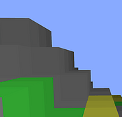
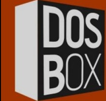

Dobroposter Mod
Dobroposter Mod
Сайт находится в разработке. Там ссылки:
Играть онлайн: Minutecraft!
Игра клон майнкрафт в 200 строк javascript! Вот отдельно его js-скрипт. Спасибо @Future-cam за игру.Это только на пк
Чтобы получить html-файл вам надо вызвать контекстное меню и нажать на сохранить ссылку как и куда-то сохранить, вместе с minutecraft.js файлом.Если хотите поменять сид то в адресной строке надо поставить параметр ?seed=####. Там могут быть любые цифры.Управление: Используйте WASD или клавиши со стрелками для перемещения. Используйте пробел для прыжка. Нажмите цифру от одного до пяти, чтобы выбрать блок. Щелкните левой кнопкой мыши, чтобы удалить блок. Щелкните правой кнопкой мыши, чтобы разместить блок.
Мой мод для Aground, подробное описание и его страница находятся в mod.io,там вы можете подписаться на него, и мой мод будет обновляться автоматически
Это мой кликер. Внимание: если вы начинаете игру, только закройте этот сайт и и игра будет завершена!
Скачать: Dosbox minimal Russian
Моя минимальная русофицированая сборка эмулятора ДОС Dosbox
Моя гиф-анимация движения Добропостера! Она состоит из трех кадров и длиться 1 секунду!
Это Minutecraft в расширении. Для установки распакуйте куда-нибудь и откройте chrome://extensions и выберите загрузить распакованное расширение
Скачать: ScratchToExe Converter tools
Чтобы сконвертировать ваш scratch 3 проект в exe вам надо: скачать этот zip-архив, разаархировать его в любое место, зайти в папку swftoexe и запустить файл swftoexe.exe. Это установщик программы Swf To Exe Converter.После этого пройдите в папку этой программы и замените файл player10 на тот который в папке .\swftoexe. После того как вы заменили этот файл вам надо скачать sb3-файл вашего Scratch-проекта.После этого запустите sb3tosb2.py, он требует установленный python, скачать его можно здесь.С помощью sb3tosb2.py сконвертируйте ваш sb3-файл в sb2 формат.Теперь с помощью программы flashplayer_32_sa.exe откройте Converter.swf. Выберете там ваш сконвертированный sb3 в sb2 файл, выставьте там ваши настройки и нажмите кнопку convert, после нажатия на кнопку сахраните куда-нибудь полученный swf-файл. Теперь откройте программу Swf To Exe Converter, выберите там ваш swf-файл и нажмите convert.Всё, ваш exe-файл готов.
https://compressor.software/
Audio Compressor 2019 это очень полезное приложение для сжатие файлов аудио.Я советую вам это приложение.

Minecraft Sandbox Ixer 2 Only pc edition is the updated version of Minecraft Sandbox Ixer 2 Construct 2 Edition, it is only for pc but you can play on mobile! Controls of the game: s - save to slot 1 l - load from slot 1 z -save to slot 2 x-load from slot 2 and for save on mobile click on buttons with text save slot 1, load slot 1,save slot 2, load slot2 use joystick on mobile phones to move arrows- to move on pc to create items click on inventory esc-exit from the world, and button on the right side of the screen it to exit from the world E -TO teleport to transformatorteleportator 3000 R to create first portal T to create second portal P -TO PAUSE GAME O TO UNPAUSE 1,2 TO CHANGE SKIN, ON MOBILE USE BUTTONS Credits: All code by Dobroposter top Sprites by BBoy Huggy-Waggy Engine -Construct 3
 Minutecraft Extension
Minutecraft Extension